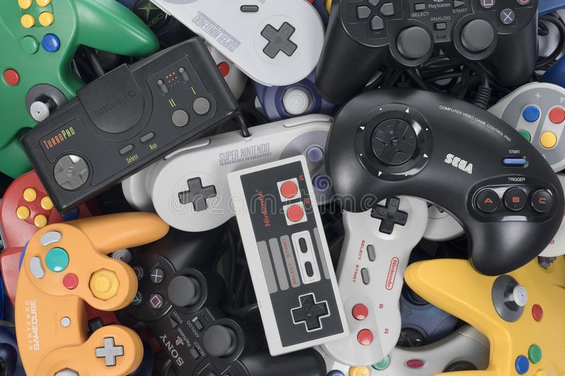
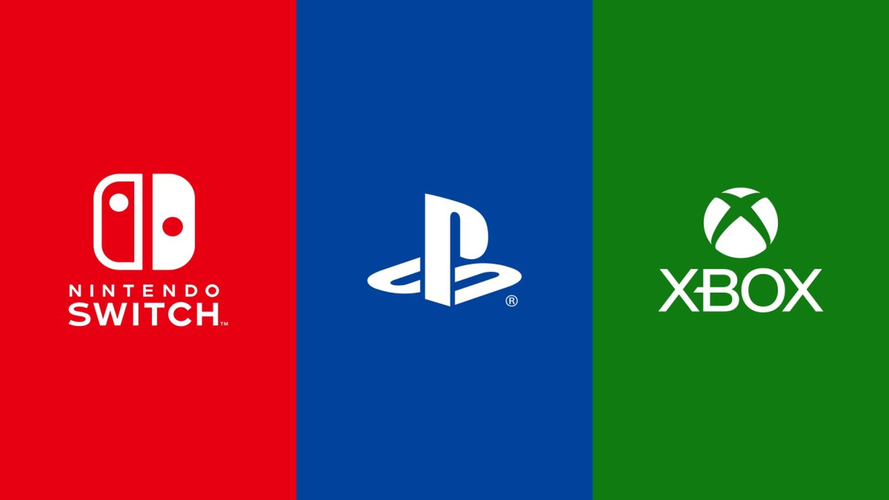
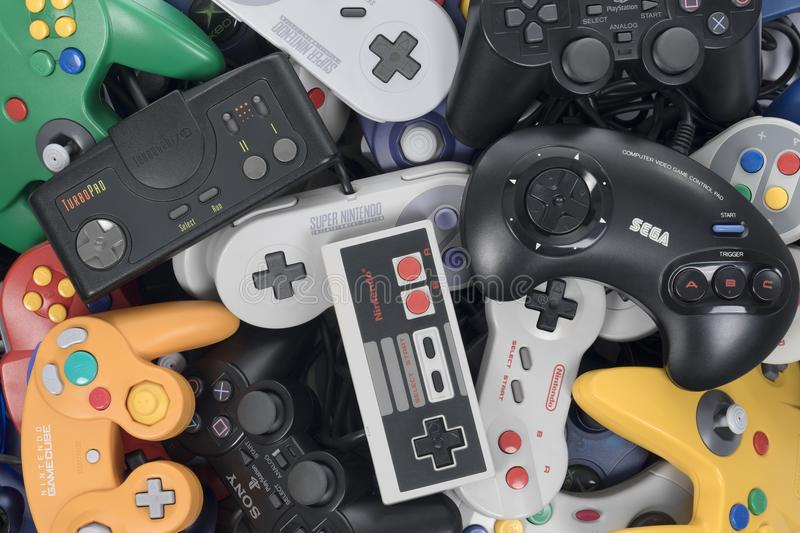
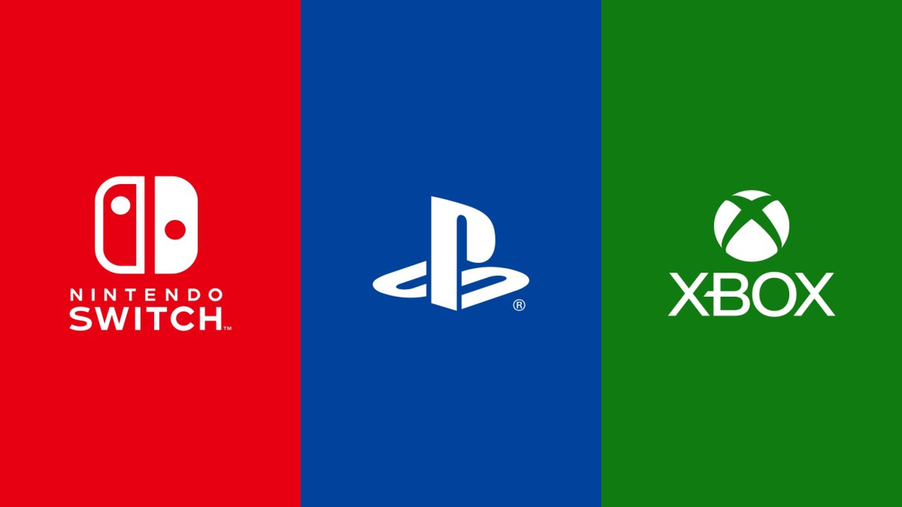

Gage Cottrell's Goofy Cat
My gaming hobby!
What does this page offer?
Hello and welcome to my gaming hobby page! This website serves as essentially one big informative document about all things related to video games! Here you can learn about many different things in the gaming world, such as the main platforms for gaming, the companies that dominate the markets, and the history of video games as a whole.
Video games and gaming itself hold a special place in my heart, as I grew up playing games, my first game being the Lego Star wars on the gamecube when I was 4, ever since then I've delved deeped into all things video games, going from Nintendo to Microsoft, and then from Console to PC, Im happy to be able to share information about the gaming world with you!
 



My gaming hobby!
Who are the main tyrants of Video Games?
There are 4 comapnies that dominate the video game Market.
| Company Name | Game Platform | Revenue (2022) |
|---|---|---|
| Sony | Console (Playstation) | $28.2 Billion |
| Microsoft | Console (Xbox) | $16.2 Billion |
| Nintendo | Console (Nintendo Switch) | $13.8 Billion |
| Valve | PC (Steam) | $13 Billion |
My gaming hobby!
History of Video games
- 1952: British professor A.S. Douglas creates "OXO", a computerized version of the game "tic-tac-toe".
- 1958: Physicist William Higinbotham creates "Tennis for Two," a Tennis game played on an oscilloscope.
- 1962: Steve Russel, at the Massachusetts Institute of Technology, invents a game called "Spacewar!", a space combat game for the PDP-1. It was the first video game that could be played on multiple computer installations.
- 1971: American engineers Nolan Bushnell and Ted Dabney found Atari.
- 1972: Atari releases arcade game "Pong", becoming the first popular video game.
- 1975: Atari releases the home version of "Pong".
- 1977: Atari releases the Atari 2600, starting the 2nd generation of video game consoles.
- 1981: Nintendo releases arcade game "Donkey Kong", introducing mario and the platforming genre to the world.
- 1983: The video game industry in the United States experiences a major crash, leading to the bankruptcy of multiple home computer and video game console companies.
- 1985: Nintendo releases the Nintendo Entertainment System (NES), that console was so popular that its widely considered the console that saved the video game industry.
- 1989: Nintendo releases the Gameboy, the first Portable gaming console.
- 1989: Sega releases the Genesis, becoming one of the first competitors to Nintendo.
- 1993: The Entertainment Software Rating Board is creating in response to Mortal Kombat, a game depicting blood and gore.
- 1993: id Software releases "Doom", popularizing the first person shooter genre.
- 1995: Sony releases the Playstation, pioneering 3D graphics and solidifying themselves as a major home console.
- 2001: Microsoft releases the Xbox, becoming one of the major home consoles.
- 2005-2006: Nintendo, Microsoft, and Sony releases the Wii, Xbox 360, and Playstation 3 respectively, starting off the age of High Definition gaming.
- 2009: Rovio releases "Angry Birds" on mobile devices, becoming a commercial hit and causing more games to release on devices like the iphone.
- 2012: Nintendo releases the Wii U, featuring touch screen remote control that allowed off-TV gaming, however the device was a commerical failure.
- 2013: Playstation and Microsoft release the Playstation 4 and Xbox one, starting 8th generation of video games.
- 2017: Nintendo Releases the Nintendo Switch, the Wii U's successor. This console allowed both TV-based and handheld based gaming
- 2020: Microsoft and Sony release the Xbox series X and S, and the Playstation 5 respectively, both offering 4k capabilities.
My gaming hobby!
Where can I play video games?
There are many different ways to play Video games. There are...
Console games
These video games are played through specialized computers created by companies like Sony, Microsoft, and Nintendo. These consoles are usually connected to a TV or monitor and the games are controlled using controllers meant for the console. This type of gaming is the most popular way to the more serious and complex side of gaming, as it offers the user high quality games made for the consoles to play from the comfort of their couch.
Mobile games
Mobile games: This type of gaming has become more popular over the years and is the easiest way to get into video games, as the majority of people own a smartphone. While there are complex and well-crafted mobile games out there, most of the mobile game library consists of very casual, easy to pick up games for their users, a lot of them being free to download. These can include things like idle games and puzzle games.
PC games

PC games: These video games are played on a personal computer or laptop using a mouse and keyboard, this way of gaming is definitely the most versatile, as the user has free range to modify and upgrade their hardware as they see fit. While PC games usually have the same games as consoles, PC gaming can offer higher quality graphics and more advanced features in games, as well as the ability to modify the game files to some games to add user created content to them.
My gaming hobby!
How are Video games made?
The process of making video games is long, complex, and very costly, involving many different stages and plenty of different roles in order to create a game. The different type of people involved in this job include...
- Programmers: They write completely new source code for each game they create!
- Artists: They create and develop different assests for the video game, such as concept art, sprites, and 3d models.
- Audio Engineer: They are responsible for creating the sound effects heard in game to create an immersive environment and give a game its identity.
- Composers: They are responsible for creating the music heard in a video game.
- Level Designers: They are responsible for creating the levels seen in a video game.
- Writers: They write dialogue for cutscenes, the player character, and non playable characters (NPCs) in the game.
We have a list of people involved in making a video game, but what do the steps look like?
- Concept and Design: Involves coming up with ideas for the game, including the gameplay, characters, and environments.
- Pre-Production: Involves taking the ideas from the concept and design creating a detailed plan for what the team has come up with.
- Production: This is where the team gets to work creating the game engine, programming mechanics, creating game assets, and testing the game.
- Testing: During this phase the team tests everything possible in order to fix bugs or glitches found in the game.
- Pre-Launch: This phase involves preparing the game for its launch, the team may release betas to get user feedback or start advertising their product to the public.
- Game Launch: The game officially gets released to the public. The product can be released physically or through digital platforms.
- Post-Launch: In this phase, the team will provide support for the game, whether it be adding patches to bugs they may have missed in their testing, or to add new content to the game.
My gaming hobby!
Why do I enjoy video games?
To me, video games are a great way to distract myself from the real world for a bit. Life itself is quite stressful, constantly having to work on assignments for school as well as juggle a job, its nice to be able to sit down for a bit and chill with some of my friends in a game. That and there are very enjoyable games out there for every itch one may have. If you want to sit down and enjoy a really good story, theres games for that, or if your wanting to relieve stress and demolish a bunch of enemies, theres games for that too. Not only that but video games have also led me to having better relationships with the people in my life and even meeting people online, some of which Ive met years ago and still are in contact with. Video games offer a fun break from the stress and scares of the world and can lead people to connect with others online, sharing unforgetable experiences and moments with one another that can stick with you for the rest of your life.
In fact, online freindships caused by video games have such a hold on some people, its led to people making memes about experiences involving online friends they dont talk to anymore.